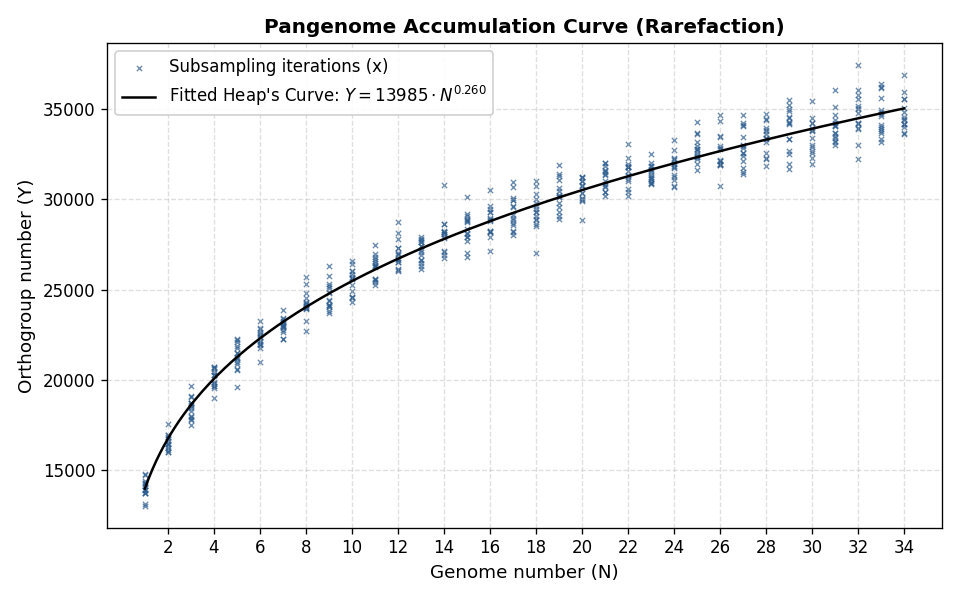
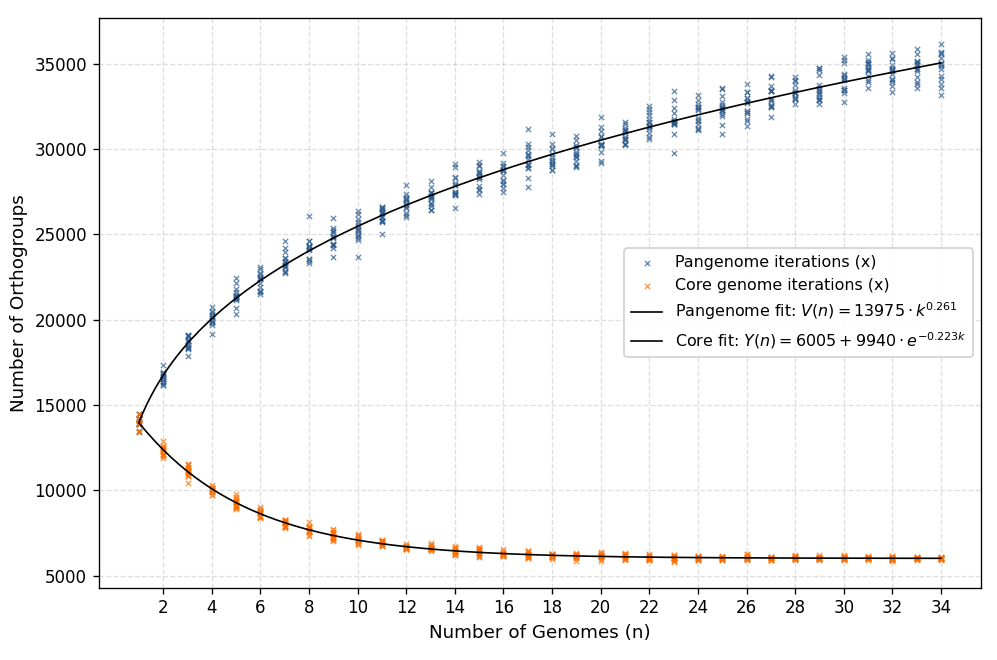

希普夫定律（Heap's Law）
在开始分析之前，我认为深入理解希普夫定律非常有必要。希普夫定律原本是用来描述语言学的一种现象：随着一个文本中的总词数增加，不重复词数会非线性增长，其经验拟合公式为：$$V(n) = K \cdot n^\beta$$
其中，$n$ 是文本总词数；$V(n)$ 是文本的独特词（不重复词）数；$K$ 是一个常数，可以反应语料的丰富度；$\beta$ 是幂律指数，决定词汇量随文本增长衰减速率的指数，也是一个常数。
注意，这里的“不重复词数”是求并集，而非全集对重复词的补集。例如对于集合：
$$A = \left \{ a_1,a_2,a_3,a_4 \right \} $$ $$B = \left \{ a_3,a_4,a_5,a_6 \right \} $$不重复词数是：
$$A\cup B = \left \{ a_1,a_2,a_3,a_4,a_5,a_6 \right \}$$ $$不重复词数 = card\left ( A\cup B \right ) = 6$$而不是：
$$\complement _U(A\cap B) = (a_1,a_2,a_5,a_6)$$ $$不重复词数 = card(\complement _U(A\cap B)) = 4$$高中一年级就学过的集合知识，还有多少记得 :D
我们可以将其在生物学中的问题中映射：假设存在一个群体，其所有个体中所有基因的总和对应希普夫定律中的 $n$，非重复基因（个体独有基因）数量对应希普夫定律中的 $V(n)$。在生物学中，希普夫定律的应用我们有一个新的名称，称为 “稀疏化曲线分析”。
当然，我们可以调查整个文本的词数分布，但是我们不可能对一个群体的所有个体进行分析，这时候就要搬出我们在统计学中的抽样调查工具了！我们只能在一个群体中抽样调查 $n$ 个样本。
稀疏化曲线分析的应用
希普夫曲线/泛基因组累积曲线
说了这么多，我们在 $n$ 个样本中算出一个 $V(n)$ 有什么用呢？$K$ 和 $\beta$ 这两个常数又有什么用呢？实际上，我认为稀疏化曲线分析的最大作用，就是回答“当前选取的样本，是否足够代表整个群体？”这个问题，并进行了量化评估。
除了样本的代表性分析，它还有另一层生物学意义：如果样本足够有代表性，那么 $K$ 和 $\beta$ 这两个常数可以评估这个群体的多样性，分化程度等。
我们在高中就学过，一切拟合都要转换为线性模型进行分析，为了拟合出 $K$ 和 $\beta$ 这两个常数，不难得出线性化的希普夫定律模型：$$\ln V(n) = \ln K + \beta \ln n$$
下面是具体算法：
假设样本总体大小为 $n$，当取出 $k$ 个样本（$k = 1, 2, \dots, n$）时，有 $C_{n}^{k} $ 种组合。当 $n$ 较大时，为了避免计算爆炸，我们随机抽取一定次的结果就可以了！所有抽样都是无放回抽样。
为了方便后续书写，我们后面全部进行穷举抽样，即当抽取 $k$ 个样本（$k = 1, 2, \dots, n$）时，有 $M = C_{n}^{k} $ 个点，我们计这 $M$ 次抽样得到的非冗余基因族为：$V_{k, 1}, V_{k, 2}, \dots, V_{k, M}$。
要进行线性拟合，得把它撺成一个点，算他们的平均值就可以了：$$\bar{V}(k) = \frac{1}{M} \sum_{m=1}^{M} V_{k, m}$$
这样，庞大的散点云被简化为一组平滑的观测数据对：$$\{(1, \bar{V}(1)), (2, \bar{V}(2)), \dots, (n, \bar{V}(n))\}$$
对上面的进行线性拟合就行了：

核心基因组衰减曲线
在泛基因组分析中，除了绘制希普夫曲线，我们一般还会绘制一条“核心基因组衰减曲线”。与希普夫曲线取并集对应的，核心基因组衰减曲线是取交集，其数学拟合模型为负指数衰减：$$Y(n) = \Omega + A \cdot e^{-\kappa \cdot n}$$
$\Omega$（渐近线 / 极值） 是最重要的一个参数。当样本量 $k \to \infty$ 时曲线收敛到的水平平行线下限，代表该物种理论上的管家基因数目。
$A$（可衰减幅度）：代表群体中存在变异、可能在抽样中被逐步淘汰的基因总量。
$\kappa$（衰减常数）： 决定曲线下落的陡峭程度。$\kappa$ 越大，说明群体内部基因缺失变异越频繁，随着新样本加入，交集缩小得越快。

希普夫曲线和衰减曲线在 $n=1$ 时取值相等，因为一个样本的基因就是其“共有”基因，也是所有基因。没有必要太纠结于左端点，真正有用的是右端点导数。
导数性质
不难想到，我们可以使用希普夫曲线的末端导数 $V'(N)$ 来定义“采样充分度”：$$\text{当 } V'(N) = \left. \frac{dV}{dk} \right\vert{}_{k=N} \le \theta \quad \Longrightarrow \quad \text{判定采样已饱和，当前样本代表性达标}$$
衰减曲线： 导数越趋近于 0，说明核心基因库越稳定，对物种管家基因的代表性越高。
希普夫曲线： 导数越趋近于 0，说明新基因边际收益越低，对物种总体基因库的覆盖/代表程度越高。